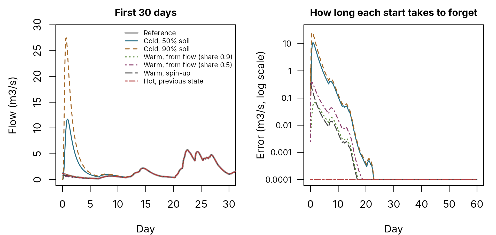

Starting a run: cold, warm and hot
pdmS7 documentation
Source:vignettes/starting-states.Rmd
starting-states.RmdEvery run starts from a state: water in the soil store, in each routing store, and in transit through the outlet delay. A poor starting state produces a spurious flood or a spurious drought until the model forgets it. For a 29-year calibration that matters little, because a warm-up period absorbs it. For a short test run or a forecast it can dominate the result.
pdmS7 offers four kinds of start.
| Start | Function | What it assumes |
|---|---|---|
| Cold | initial_state(model, soil_fraction = 0.5) |
Soil at a fixed fraction of capacity; routing stores empty |
| Warm, from an observed flow | initial_state_from_flow(model, observed_m3s, baseflow_fraction) |
The catchment is in steady state with the flow at the start |
| Warm, by spin-up | spin_up(model, forcing, cycles) |
Repeating a forcing period settles the stores |
| Hot | The final state of a previous run | Nothing: the model simply continues |
The same starts are available from other languages through the core:
pdm_initial_state(), pdm_state_from_flow(),
and passing the state array from one run to the next.
An experiment
The reference below is a catchment simulated continuously for a year. At the end of that year we start a 60-day run from each kind of start and compare it with the reference. The first week is dry, as it often is at the start of a test period.
set.seed(3)
model <- pdm_model(area_km2 = 50)
make_forcing <- function(n) {
data.frame(rain = ifelse(stats::runif(n) < 0.06, stats::rgamma(n, 0.7, scale = 3), 0),
pet = 0.08)
}
history <- make_forcing(24 * 365)
period <- make_forcing(24 * 60)
period$rain[1:(24 * 6)] <- 0
year <- run_pdm(model, history, initial_state(model, 0.5))
true_state <- year$state
observed_start <- year$output$q_end_m3s[nrow(history)]
reference <- run_pdm(model, period, true_state)$output$q_m3s
round(observed_start, 3)
#> [1] 1.216The steady-state start needs the share of the flow that is baseflow. In practice you would estimate it, for example from the National River Flow Archive’s baseflow index for a UK gauged catchment. Here we show two guesses: a good one (0.9) and a poor one (0.5).
starts <- list(
"Cold, 50% soil" = initial_state(model, 0.5),
"Cold, 90% soil" = initial_state(model, 0.9),
"Warm, from flow (share 0.9)" = initial_state_from_flow(model, observed_start, 0.9),
"Warm, from flow (share 0.5)" = initial_state_from_flow(model, observed_start, 0.5),
"Warm, spin-up" = spin_up(model, period, cycles = 3),
"Hot, previous state" = true_state
)
runs <- lapply(starts, function(s) run_pdm(model, period, s)$output$q_m3s)
days <- seq_along(reference) / 24
par(mfrow = c(1, 2), mar = c(4, 4.5, 2, 1), cex.main = 0.95)
plot(days, reference, type = "l", lwd = 3, col = "grey70", xlim = c(0, 30),
ylim = c(0, max(unlist(runs), reference) * 1.05), xlab = "Day", ylab = "Flow (m3/s)",
main = "First 30 days")
for (i in seq_along(runs)) lines(days, runs[[i]], col = pal[i], lwd = 1.5, lty = i)
legend("topright", c("Reference", names(runs)), col = c("grey70", pal),
lty = c(1, seq_along(runs)), lwd = c(3, rep(1.5, length(runs))), bty = "n", cex = 0.65)
plot(NA, xlim = c(0, 60), ylim = c(1e-4, 30), log = "y", xlab = "Day", yaxt = "n",
ylab = "Error (m3/s, log scale)", main = "How long each start takes to forget")
axis(2, at = 10^(-4:1), labels = c("0.0001", "0.001", "0.01", "0.1", "1", "10"), las = 1,
cex.axis = 0.8)
for (i in seq_along(runs)) {
lines(days, pmax(abs(runs[[i]] - reference), 1e-4), col = pal[i], lwd = 1.5, lty = i)
}
Left: the first 30 days of each run against the reference (thick grey). Right: each run’s error on a log scale; values below 0.0001 m3/s are drawn at the bottom of the axis.
first_week <- seq_len(24 * 7)
data.frame(
start = names(runs),
mean_error_first_week_m3s = round(vapply(runs, function(q) {
mean(abs(q[first_week] - reference[first_week]))
}, numeric(1)), 4),
row.names = NULL
)
#> start mean_error_first_week_m3s
#> 1 Cold, 50% soil 3.0757
#> 2 Cold, 90% soil 6.2580
#> 3 Warm, from flow (share 0.9) 0.0348
#> 4 Warm, from flow (share 0.5) 0.1237
#> 5 Warm, spin-up 0.0645
#> 6 Hot, previous state 0.0000What the experiment shows
- A cold start manufactures a flood. With empty routing stores and a half-full or nearly full soil store, the soil drains rapidly into groundwater and the model produces a peak many times the true flow, in dry weather. The 90 per cent start is worse than the 50 per cent start: guessing “wet” is not safer.
- The steady-state start removes most of that error. It starts from the observed flow, and the remaining error comes from the assumption that the catchment is in equilibrium. Even the poor baseflow guess beats a cold start by more than an order of magnitude.
- Spin-up does about as well as a good steady-state start here, but it needs forcing to repeat and it settles towards the forcing period’s own average conditions, not the conditions on the start date.
- A hot start is exact, as it should be: restarts are exactly continuous.
In this catchment every start converges within about three weeks. A catchment with a slower groundwater store remembers its start for longer, sometimes for months, which is when the choice matters most.
Recommendations
-
Calibration over many years: any start, followed by
a warm-up period of at least a few months that is simulated but not
scored (the
warmupargument ofcalibrate_pdm()). - Short test runs: a steady-state start from the first observed flow, preferably at the start of a dry recession, when the steady-state assumption is closest to the truth.
-
Operational forecasts: a hot start from the
previous run, then
correct_state()at the forecast origin. See Forecast updating. - Restarts: keep the final state of each run. It is a complete record of the model’s memory, and continuing from it reproduces an unbroken run exactly.